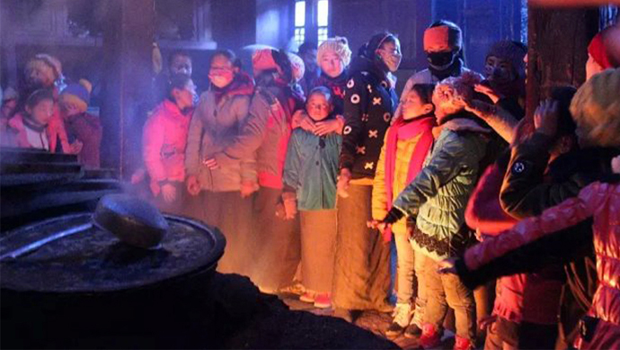

学校简介
在崎岖的四川甘孜藏区大山深处，雅江县德差乡昌都寺，在海拔4000米的地方，有一个被云雾包围的菩提增长小学，这是个平凡的没有人会注意到的学校，这也是个不同寻常的学校。
对于这所小学的孩子们来说，幸福是一块黑板，是半截被人用剩的铅笔，是可以坐着写字的桌椅，是知识，是希望。偏僻落后不能阻挡孩子对知识的渴望，当地僧人将佛堂作为孩子们的教室，孩子们这才有了学校，真诚的乡民送来食物，可是孩子们太多了，目前为止寺庙里的孩子已经上百人，其实还包含了十多位没有父母的孤儿。
对于这所小学的孩子们来说，幸福是一块黑板，是半截被人用剩的铅笔，是可以坐着写字的桌椅，是知识，是希望。偏僻落后不能阻挡孩子对知识的渴望，当地僧人将佛堂作为孩子们的教室，孩子们这才有了学校，真诚的乡民送来食物，可是孩子们太多了，目前为止寺庙里的孩子已经上百人，其实还包含了十多位没有父母的孤儿。

很多穿着单薄的孩子们走了很远的山路，翻山越岭而来，却只能在冰凉的青石板上趴着写字，小小的佛堂承载不下孩子们的梦想。他们睁着双眼看向天空，渴望着能够去到山外不再是山的地方。这些孩子大多双亲在外，还有十几位孤儿常驻在寺庙。僧人们负担不起这么多压力，他们只是一些敲钟种菜自供香火的信徒，维持学校的授课都很困难，这些孩子憧憬着一个普通至极的本子和半截铅笔，却只得到了寒冷和饥饿。
